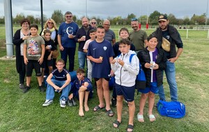

Le club
Un club, neuf villages
Notre histoire, nos valeurs et les bénévoles qui font vivre le FTT.
Présentation
Un club pour les enfants de nos villages
Le Football Terrasses du Tarn est né d'une idée simple : dans le milieu rural, il est difficile de réunir assez de joueurs d'une même catégorie dans un même village. En unissant leurs forces, plusieurs communes permettent à chaque enfant de pratiquer le football près de chez lui.
Aujourd'hui, le club accueille des filles et des garçons de l'école de foot (U6) jusqu'aux U17, et une équipe de vétérans qui joue des matchs amicaux le vendredi soir.

Photo : Football Terrasses du Tarn (site officiel du club)
Histoire
Une histoire qui grandit
- 2005Création du Football Terrasses du Tarn par les villages d'Albefeuille-Lagarde, Barry-d'Islemade, Les Barthes, Labastide-du-Temple, Lavilledieu-du-Temple, Meauzac et Saint-Porquier.
- 2018Création d'une équipe 100 % filles et après-midi découverte ouverte aux garçons et aux filles lors de l'assemblée générale.
- 2024Jérémy Mothes devient président du club.
- 2025Neuf communes unies : Lafrançaise et Villemade rejoignent le projet. Campagne de recrutement des féminines, U9 à U17.
- 2026Saison 2026-2027 : 8 équipes de U6 à U17 et des vétérans. Jérémy Mothes est élu meilleur dirigeant sportif.
Dates issues du site historique du club et de la presse locale (Le Petit Journal). Le club peut compléter cette frise.
Esprit du club, d'après le site historique du FTT
Valeurs
Dévoués, disponibles, désintéressés
Le bureau
Celles et ceux qui font vivre le club
Les éducateurs
Ensemble, pour le club !
Chausse les crampons, rejoins la famille FTT
Venez essayer le foot : filles et garçons, de U6 à U17, et une équipe vétérans pour l'ambiance du vendredi soir.
Nous rejoindre